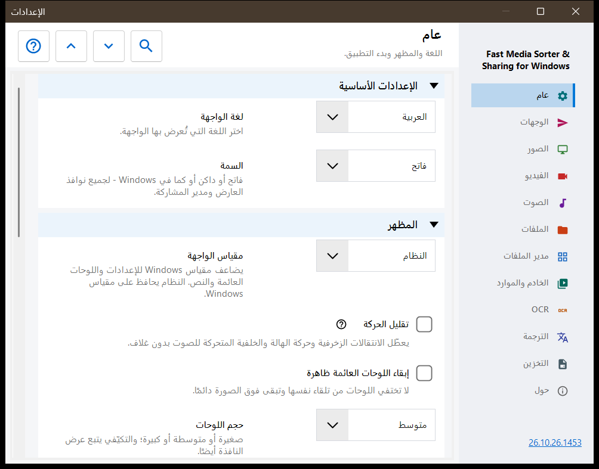
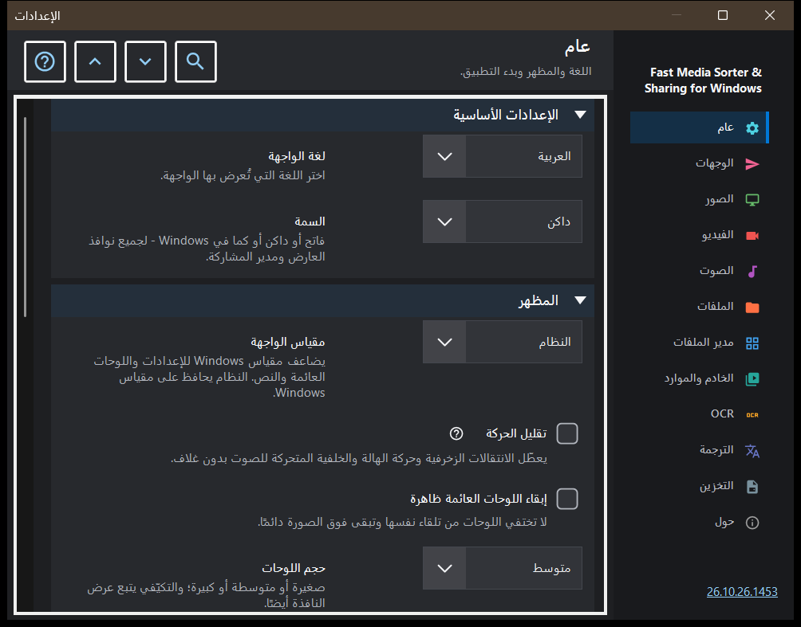

الإعدادات
الإعدادات
الغرض من هذه النافذة
تضم نافذة الإعدادات كل خيارات العارض. تُفتح بالمفتاح F2، أو بزر الإعدادات في شريط الأدوات، أو من مدير الملفات في لوحة الصور بزر الإعدادات.. الذي ينتقل مباشرة إلى صفحة مدير الملفات. تُعرض الصفحات في شريط جانبي على اليمين، ويمكن طي المجموعات الموجودة في الصفحة.


بهذا الترتيب
- اختر صفحة في الشريط الجانبي، أو اكتب كلمة في البحث في الإعدادات للعثور على خيار.
- استخدم توسيع الكل وطي الكل لفتح كل مجموعات الصفحة أو طيها.
- غيّر الخيارات التي تحتاجها.
- اضغط Esc لإغلاق النافذة.
عناصر النافذة
عام
اللغة والسمة (السمة)، ثم مظهر اللوحات العائمة: مقياس الواجهة وتقليل الحركة والتثبيت والحجم والعتامة والزوايا ومعلومات الصورة المعروضة فوقها وإخفاء مؤشر الفأرة؛ ويعيد الزر إعادة اللوحات إلى أماكنها كل لوحة نقلتها إلى مكانها المعتاد. تحدد مجموعة بدء التشغيل ما يحدث عند البدء (الفتح عند البدء، واستئناف آخر ملف، والسماح بنوافذ جديدة)، وفيها إظهار خطوات الترحيب مجدداً الذي يعيد فتح الإعداد الأولي. تقوم مجموعة الإعدادات المتقدمة بتصدير الإعدادات الإضافية واستيرادها وبإعادة القيم الافتراضية.
الوجهات
المجلدات العشرة التي تنقل إليها المفاتيح 1-9 و0 الملف؛ وShift مع رقم من الصف العلوي ينسخ إلى المجلد نفسه. في الجدول صف لكل مفتاح: حدّد صفًا ثم استخدم مجلد على هذا الكمبيوتر.. أو الموارد (مجلد SFTP أو SMB) أو مسح، أو أسقط مجلدًا على الصف. تحدد مجموعة مظهر جدول الوجهات موضع الجدول المعروض فوق الصورة وعرضه وحجم النص والعتامة وعدد الصفوف الظاهرة، ويشغّل الخيار جدول الوجهات فوق الصورة هذا الجدول أو يوقفه.
الصور
كيف تُفتح الصور وكيف تبدو: مقياس الصورة الجديدة، والتدوير التلقائي حسب وسم EXIF، والتكبير بعجلة الفأرة، والرسوم المتحركة عبر مشغّل الفيديو، ومعلومات حجم الصورة وحجم الملف وتاريخه. تحدد مجموعة خلفية الصورة اللون المحيط بالصورة، وخلفية منظورية والهالة (الديناميكية والمتحركة والسرعة). يحدد سلوك عرض الشرائح الفاصل الزمني والترتيب العشوائي، وهل يوقف التنقل اليدوي العرض، وماذا تفعل الواجهة أثناءه. وفي الجزء المتقدم التحجيم عالي الجودة وحجم بطاقة الصورة المصغرة.
الفيديو
هل تشارك ملفات الفيديو في التصفح، والتشغيل التلقائي، والإجراء عند نهاية المقطع، وتذكّر الموضع، وصوت مشترك: الصوت والفيديو. بعد ذلك مجموعات لغات الصوت والترجمة النصية المفضلة والتحكم في التشغيل: ما تفعله نقرة واحدة، وتأخير ظهور عناصر التحكم، وعناصر التحكم أثناء الإيقاف المؤقت، وثلاث خطوات للتقديم والترجيع.
الصوت
هل تشارك ملفات الصوت في التصفح، والإجراء عند نهاية المقطع الصوتي، ومستوى الصوت الافتراضي، والبدء بكتم الصوت. تضم مجموعة المعلومات والتحكم شريط الصوت الظاهر دائمًا، والتصور المرئي للملفات التي لا غلاف لها، ومؤقت النوم.
الملفات
التعامل مع الملفات: الانتقال إلى التالي بعد النسخ، وما يحدث عند تعارض الأسماء وبعد النسخ أو النقل، وشريط الحالة عند عمليات الملفات، وإنشاء مجلد الوجهة المفقود، والحذف إلى سلة المحذوفات، وتأكيد الحذف. تشمل مجموعة أنواع الملفات المجلدات الفرعية والامتدادات والمستندات وحجم معاينة النص والملفات الأخرى. وتحدد المجموعات التالية الملفات والمجلدات الأخيرة وحدود الأرشيفات وملفات .fd-sec المحمية. وفي مجموعة المفاتيح والارتباطات الزر اختصارات لوحة المفاتيح الذي يفتح نافذة المفاتيح السريعة، وارتباطات الملفات للصور والفيديو.
مدير الملفات
خيارات مدير الملفات في لوحة الصور: وضع العرض (بلاطات أو قائمة)، وتصفية المحتوى، والملفات المخفية، والإجراء المتبع مع الملفات التي ليست وسائط. تختار مجموعة الأماكن الأماكن المعروضة (المحلية والموارد والأجهزة)، وفيها تذكر الفرز.
الخادم والموارد
تضم القائمة الخوادم والمجلدات الشبكية موارد SFTP وSMB التي يستطيع العارض تصفحها واستخدامها كوجهات. أما مجموعة Android / SFTP فمخصصة لنشر مجلدات هذا الكمبيوتر عبر SFTP لتطبيق أندرويد؛ وفيها دليل الاتصال والزر إدارة خادم SFTP لعميل أندرويد.. لكل إدخال لخادم تبادل، ما دام متصلًا ويحتفظ خادمه بإعدادات قياسية، الزران حفظ كإعدادات قياسية.. وقراءة الإعدادات القياسية..: الأول يحفظ مجموعات الإعدادات المحددة على الخادم كإعدادات قياسية لحسابك، والثاني ينقل قيم المجموعات المحددة إلى هذا الكمبيوتر. تبقى المسارات وكلمات المرور والمفاتيح وأحجام النوافذ على هذا الكمبيوتر، ويستطيع مشغّل الخادم قراءة الإعدادات القياسية، وتبقى التغييرات اللاحقة هنا محلية حتى تقرأ الإعدادات القياسية مرة أخرى.
OCR
تفعيل OCR يشغّل التعرف على النص، والتشغيل تلقائيًا يتيح له أن يعمل من تلقاء نفسه. تحدد مجموعة التعرف على النص لغة المصدر والجودة والوضع وتنزيل بيانات اللغة.
الترجمة
اختر الخدمة (خدمة الترجمة) ولغة الترجمة (لغة الترجمة)؛ وتضم الحقول الأخرى عنوان الخدمة وخادم Ollama المحلي والنموذج ومفتاح API. تحدد مجموعة الترجمة فوق الصورة عتامة لوحة الترجمة المعروضة فوق الصورة وظهورها.
التخزين
حدود ذاكرات التخزين المؤقت مع زر مسح لكل منها: الصور بعد فك ترميزها، والصور المصغرة للوحة الصور، والأرشيفات، والموارد الشبكية. وفي ذاكرة OCR على القرص الخيار تخزين النتائج على القرص، وحدّها الخاص، وزر مسح.
حول
معلومات المنتج والروابط: التحديثات، وإعادة ضبط الإعدادات، والمشاريع ذات الصلة، ومساعدة البرنامج، والموقع، وGitHub، والإصدارات، وصفحة الخصوصية، ورخصة MIT، وإشعارات المكوّنات الخارجية. يعرض إرسال السجلات إلى المؤلف نافذة موافقة تسرد ما سيدخل في الأرشيف، ثم تسلّم الأرشيف إلى برنامج البريد لديك؛ ولا يفتح البرنامج أي اتصال شبكي لذلك.
المستندات
فعّل قارئ PDF بشكل مستقل عن مرشحات الفرز. اختر صفحة واحدة أو تمريراً مستمراً أو صفحتين، والألوان والتكبير ونطاق البحث وحدود الذاكرة المؤقتة. أزرار الصفحات تغيّر الصفحات وأزرار الملفات تغيّر الملفات. حقول النص تستقبل B/N والأرقام وDelete؛ ويعيد Esc التحكم إلى العرض. إعادة ضبط المظهر تحفظ المواضع والإشارات المرجعية المسماة. القراءة الصوتية تستخدم أصوات Windows المثبتة. تبقى كلمات المرور في الجلسة. تتيح نسخة محلية مؤقتة نقل الأصل. يستثني التصدير العادي سجل القراءة والإشارات وإعدادات المستند الفردية. للملفات النصية مجموعاتها الخاصة. «القراءة الكاملة للملفات النصية» تفتحها بخطوط وسمات وأرقام أسطر وبحث؛ والملف الذي يتجاوز حد التحرير يُقرأ على أجزاء. «تحرير الملفات النصية» يضيف Ctrl+E: يحافظ الحفظ على الترميز، وتبقى التغييرات غير المحفوظة في مسودة مشفرة. «فتح كنص» في قائمة الملف يعرض أي ملف آخر كنص.